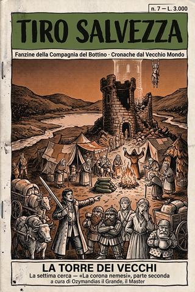

Tiro Salvezza · numero VII
La torre dei vecchi
Numero sette della fanzine della Compagnia del Bottino, secondo della «Corona nemesi»: un villaggio lasciato al suo destino, una musica d'organo che si sente appena, una comune di vecchietti molto ospitali e una torre che di notte sta in piedi e di giorno cade a pezzi. Il numero in cui il capo decide.
- ≈ 47 min di lettura
- Ozymandias il Grande
- dalle partite a D&D 5ª ed.
- anche in EPUB, 1,3 MB
Editoriale — numero sette
TIRO SALVEZZA — fanzine della Compagnia del Bottino · rubrica «Cronache dal Vecchio Mondo»
Nel numero scorso vi ho lasciati su una strada imperiale, con tre fosse in più e un cacciatore di mostri in più. Questo numero riparte da lì, e vi avverto subito che il cacciatore di mostri non dura molto. Non per colpa sua.
È la seconda parte della «Corona nemesi», e della corona, ancora, nessuna traccia. In compenso c’è una fortezza che chiude le porte in faccia ai nani, una strada che nessuno cura più, una musica d’organo che si sente appena, nelle notti senza vento, e una torre che di notte sta in piedi e di giorno cade a pezzi. C’è una comune di vecchietti molto, molto ospitali. E c’è un padrone di casa dalle maniere squisite, che offre da bere.
È anche il numero in cui la Compagnia del Bottino ha un capo. Ne ha sempre avuto uno, in teoria; in pratica era chi restava nella stanza mentre gli altri votavano. Stavolta il capo del momento si chiama Karter, e decide. Decide molte cose. Leggetele tutte, e tenete il conto: io l’ho tenuto, e alla fine c’è una colonna che non ho chiuso.
Si ride, come sempre, e forse più del solito: ci sono vecchietti armati di cetrioli, un pitale che vola da solo, un mago che sceglie il suo nome d’arte nel momento meno adatto della sua vita. Ridete. È fatto apposta. Poi, a metà numero, c’è una porta. Apritela piano.
— Ozymandias il Grande, il Master
Sommario
- La torre dei vecchi (7ª cerca — «La corona nemesi», parte seconda) — Verso nord, lungo una strada che il bosco si sta riprendendo: un villaggio sotto assedio, una fortezza che non apre, una musica che chiama, e una comune di anziani ai piedi di una torre che non è quello che sembra. Il numero in cui il capo decide. (Continua.)
Linea temporale
Dove siamo nella campagna della Compagnia del Bottino. In grassetto ciò che leggerete in questo numero.
- 1ª e 2ª cerca — I pirati del Talabec (n. 1)
- 3ª cerca — La torre di ossa + Il principe delle sabbie — Sylvania (n. 2 e 3)
- 4ª cerca — La diplomazia elfica — verso Ulthuan (n. 4)
- 5ª cerca — L’invasione di Ulthuan — Nagarythe, la terra degli elfi oscuri; la memoria di tutti viene cancellata (n. 5)
- 6ª cerca — Il bosco che cammina — «La corona nemesi», parte prima: la torre di guardia e il bosco che cammina; il registro dei morti sale a tredici (n. 6)
- 7ª cerca — La torre dei vecchi — «La corona nemesi», parte seconda: dalla fortezza di Bergeroff alla valle del Delb, verso Untergard. (Il registro, ancora una volta, si allunga.)
Fili aperti all’inizio di questo numero: gli elfi sui cervi del Drakwald, che nessuno ha più rivisto; l’anello cremisi di Shava, chiuso nella sala proibita del conte; l’armata di Middenheim e il dirigibile partiti verso nord; la commissione di Alrik nelle colline ululanti; Ardal, rimasta al Ritrovo di Benedict; e tutto quello che i numeri precedenti hanno lasciato in sospeso: i doni di Tzeentch, i marchi di Ramotis, Manfred Von Carstein che cammina di nuovo nel mondo.
La torre dei vecchi
Cronaca della settima cerca della Compagnia del Bottino, seconda parte della «Corona nemesi». Un villaggio lasciato al suo destino, una musica che si sente appena, e una torre che di giorno cade a pezzi. A cura di Ozymandias il Grande, il Master.
Dalla fortezza di Bergeroff alla valle del Delb. Il numero in cui il capo decide.
Prologo — Il capo del momento
In ogni compagnia d’avventura c’è un capo, e chiunque abbia mai diretto una campagna sa come lo si sceglie: non per merito, non per anzianità, non per il carisma o per la saggezza, ma per assenza. Il capo è quello che non ha fatto in tempo a uscire dalla stanza mentre gli altri votavano. Si alza per prendere una birra, torna, e lo trova scritto: capo. Da quel momento ogni decisione è sua, ogni errore è suo, e ogni forziere, curiosamente, resta di tutti.
In questo numero il capo del momento si chiama Karter. È un umano, porta uno spadone che chiama con un nome elfico difficile, un archibugio che chiama con nomi che non posso stampare, e un’idea molto alta di sé come stratega. Non la condivide nessuno, nemmeno l’archibugio. Ma era lì quando si votava, e dunque comanda lui.
Vi avverto, come è mio costume, di ciò che troverete, e vi avverto anche di ciò che non troverete. Non troverete la corona che dà il titolo a questa cerca: è ancora da qualche parte davanti a noi, e io non ho fretta. Troverete invece una fortezza che chiude le porte in faccia ai nani, una strada che nessuno cura più, una musica d’organo che si sente appena, e una torre che di notte sta in piedi e di giorno cade a pezzi. Troverete una comunità di vecchietti molto, molto ospitali. E troverete il mio capo del momento alle prese con la cosa più difficile che esista per un capo: decidere qualcosa.
Ridete, perché c’è da ridere. Ma tenete d’occhio chi decide. In questa compagnia, di solito, è lì che comincia il conto.
Capitolo primo — Il villaggio che non salvarono
Spartite le spoglie della notte delle tombe — e ve lo dico subito: la spartizione durò più dello scavo, come promesso —, il gruppo si rimise in strada e arrivò in serata a una stazione di posta fortificata. C’era tutto quello che serve a una comitiva dopo una brutta settimana: il cambio dei cavalli, uno stufato caldo, birra a volontà, un letto in comune e, soprattutto, abbastanza alcolici da litigarsi. Se li litigarono in particolare Karter, Charizard e Loran; e lasciatemi annotare, a beneficio della scienza, che per essere elfi i due ultimi si rivelarono sorprendentemente avvinazzati. Gli elfi, si sa, reggono il vino come reggono le critiche: per un bicchiere sì, poi cominciano a cantare.
Il giorno dopo si ripartì con la carovana in fila sulla via imperiale. In testa Loran, Karter e Ulf Svenson, il cacciatore di mostri, con lo spadone di Kragg sulla spalla e l’aria di chi non ha bisogno di guardarsi attorno per sapere che cosa c’è attorno. In coda, a chiudere la retroguardia, Charlemagne Leclerc, il cavaliere bretonniano, che sorvegliava con paziente superiorità i più lenti della comitiva: Thanosh, il mago kislevita Kesaroff e il nano Blok, che gli elfi chiamavano ormai Noccolo perché il suo nome nanico, dicevano, era troppo duro per le loro delicate labbra. (Blok, da parte sua, chiamava gli elfi in un modo che le loro delicate labbra non avrebbero saputo pronunciare, e che io non trascrivo.)
Lungo la strada il socio di Svenson, un cacciatore anche lui, di poche parole e di molto naso, si fermò e indicò delle tracce. Tracce sospette, fresche, che uscivano dalla foresta e piegavano verso un villaggio poco fuori dalla via principale. Loran decise di andare a vedere. Si infilò furtivo nel buio del Drakwald, che anche di giorno è buio come la cantina di un nano, e scomparve tra gli alberi.
La sortita lo portò nei pressi del villaggio: un tipico insediamento imperiale di provincia, case di legno e paglia, un campanile, una palizzata spessa tutt’attorno. E quella palizzata, in quel momento, era sotto attacco. Una banda numerosa di uominibestia la stringeva da ogni lato, e Loran, appiattito dietro un tronco, ebbe tutto il tempo di catalogarli come un naturalista: molti Nogor, i più piccoli, i reietti con le corna appena abbozzate; diversi Ungor, il nerbo del popolo del Caos; a guidarli alcuni Gor, i capobranco, con spesse corna avvolte su sé stesse come quelle di un montone malvagio. E, ad affiancare la scorreria, i temibili centigor a quattro zampe, mezzi uomini e mezzi cavalli, ebbri di un liquore grezzo, che agitavano grandi alabarde fatte di rottami.1
Loran decise di ritirarsi. Saggia decisione, che però alcuni Nogor non condivisero: lo scoprirono e si lanciarono al suo inseguimento nella foresta fitta. Ma il nostro ranger elfo non è nato ieri, e nemmeno l’altro ieri, e nemmeno il secolo scorso; li seminò tra i rovi con la facilità di chi in un bosco ci è cresciuto, e tornò di corsa dagli altri ad avvisarli.
Poi venne il momento della decisione. E qui devo raccontarvi, con la precisione del cronista, il funzionamento della democrazia nella Compagnia del Bottino.
Si votò.
Da una parte c’era un villaggio dell’Impero, con dentro della gente che non conoscevano, sotto l’attacco di una banda di mostri, a un’ora di cammino. Dall’altra c’era la strada, che proseguiva tranquilla verso nord, verso una commissione pagata. La votazione pendette — ve lo riporto testualmente, perché la formula è degna di un notaio — «sul non impicciarsi e proseguire, senza fornire aiuto». Karter, che in quei giorni faceva il capo, prese atto della volontà popolare con la prontezza di chi è sollevato dal dover decidere qualcosa di persona.2
Svenson non disse niente per un lungo momento. Poi si sistemò lo spadone sulla spalla, fece un cenno al suo socio, e disse una frase sola, che vi riporto perché è l’unica frase seria di tutto questo capitolo:
«Io quella gente la vado a prendere.»
E se ne andarono, lui e il socio, verso il villaggio assediato, senza voltarsi. Ve l’avevo detto, nel numero scorso, che in questa compagnia un uomo così dura poco. Non immaginavo che durasse così poco.
Capitolo secondo — Bergeroff
Rimasti senza il loro cacciatore di mostri, i nostri procedettero lesti verso il Bergeroff, la grande fortezza di mezzavia lungo la vecchia strada, dove contavano di trovare un comodo rifugio per la notte.
Ci arrivarono troppo tardi. Le porte erano già chiuse, sbarrate per la notte come vuole il regolamento di ogni fortezza dell’Impero che si rispetti, e sugli spalti le guardie guardavano giù con l’aria di chi non ha nessuna intenzione di riaprirle. I nani provarono a brontolare. È il loro modo di trattare: si parte brontolando, si passa a brontolare più forte, si conclude brontolando di aver trattato. Ottennero soltanto degli sberleffi. Sberleffi che le guardie rincararono di dose, con evidente sollievo, appena videro gli elfi del gruppo.3
Non avendo alternative, la comitiva si accampò subito fuori dalle mura di legno dell’insediamento che sorgeva attorno alla fortezza, tra le baracche dei mercanti e i recinti dei maiali, e attese l’apertura del mattino dopo. I nani passarono la notte a elencare i difetti architettonici della palizzata. Gli elfi la passarono a lamentarsi dell’odore dei maiali. I maiali, per quanto ho potuto ricostruire, la passarono a lamentarsi degli elfi.
Una volta finalmente dentro, il gruppo trovò ricovero in una piacevole locanda con ristorante e un’ampia cantina di vini, che i più assetati — Loran, Karter, Charizard e il mago Nurofenus — si incaricarono di esplorare con metodo scientifico. Poi ci si divise, ciascuno in cerca di quel che gli serviva: armi, oggetti utili, pozioni miracolose, e soprattutto informazioni. Sorvolo sulla parte mercantile, che in questa compagnia è sempre la più lunga e la meno edificante.
Le informazioni, comunque, arrivarono. Al bancone e nei vicoli si parlava di due cose. Del tumulo di Wulfric, un’antica sepoltura da qualche parte verso nord, intorno alla quale giravano storie di quelle che si raccontano a bassa voce. E della torre di Schwarzlagen, una torre diroccata alla confluenza di due fiumi, che secondo le dicerie apparteneva a un negromante, e da cui, nelle notti senza vento, si sentiva suonare un organo. Un negromante con un organo: i miei ragazzi trovarono la combinazione irresistibile. E poiché la strada per la torre passava comunque nella direzione giusta — verso le miniere delle colline, dove Alrik voleva che arrivassero —, decisero che era una strada come un’altra. Lo era. Era anche, come vedremo, un’altra cosa.
Il gruppo si diresse quindi a nord, fino alla confluenza del Delb con un suo affluente. E lì, al guado, le guardie confermarono quello che si vedeva già a occhio nudo: la strada da quel punto in poi non era più tenuta come la via principale. Da quando gli uominibestia avevano attaccato il paese di Bergen, devastandolo, nessuno se ne occupava più. Si aspettava che dal governo arrivassero i fondi e le maestranze per riconquistare e ricostruire la cittadina; ma i permessi languivano, come languono sempre i permessi, e intanto la strada se la riprendeva il bosco.
Un villaggio distrutto dagli uominibestia, a pochi giorni da un altro villaggio assediato dagli uominibestia. Nessuno dei miei ragazzi fece il collegamento. Io lo faccio per voi, e poi lo lascio lì.
Capitolo terzo — La musica d’organo
La strada, oltre il guado, cominciò presto a essere invasa da erbacce e rovi. I carri però procedevano senza intoppi, e la giornata era bella, e il vino di Bergeroff era ancora in circolo; al punto che Charizard, Nurofenus e Pietrone — un nano nuovo, di cui sentirete parlare, che portava sempre con sé un pitale da viaggio per ragioni che preferisco non indagare — si misero a canticchiare e a ballare lungo il percorso, saltellando tra i carri come una banda di paese.
Andarono avanti così fino al calare della sera, che li trovò ancora sulla strada, in mezzo al nulla.
Karter, il capo del momento, fu per fare campo. E ve lo riconosco, perché è giusto: era la decisione sensata. Con il buio, su una strada abbandonata, al margine del Drakwald, almeno non ci si sarebbe persi. Ma i tre musicanti non ne vollero sapere di fermarsi. Senza nemmeno prendere la loro parte di cibo, proseguirono nel buio, cantando una tipica canzone nanesca, una di quelle che parlano di birra, di oro e di elfi presi a calci, e che l’elfo del trio cantava con un entusiasmo che in condizioni normali lo avrebbe imbarazzato a morte.
Gli altri rimasero interdetti. E quando si accorsero davvero che i tre non sarebbero tornati, era ormai troppo tardi per seguirli nel buio. Si fece campo. E nel tenebroso silenzio della loro perplessità, mentre il fuoco crepitava e nessuno parlava, la sentirono: una nenia musicale debolissima, lontana, proprio al limite di ciò che un orecchio riesce a sentire. Un suono lungo, sospirato, a più voci, come un organo suonato da qualcuno che non ha fretta.
Era vera, allora, la leggenda del negromante della torre e del suo strumento magico a molte canne?
Nessuno ebbe il tempo di rispondere, perché fu Loran a sentire un fruscio dietro di loro, lungo la strada. Il gruppo si preparò in silenzio. L’elfo si arrampicò su un albero per avere più campo di tiro, gli altri impugnarono le armi, qualcuno spense la lanterna. Pochi minuti di attesa. Poi, dal buio, apparve uno strano viandante: un vecchio male in arnese, con una rozza lanterna di latta appesa a un bastone da pellegrino. Attraversò l’accampamento come se fosse la cosa più normale del mondo, sorridendo a tutti con una bocca sdentata, salutando con qualche parola di circostanza sul tempo e sulla strada. E poi svanì nel buio, dall’altra parte, nella stessa direzione in cui erano spariti i tre musicanti.
Nessuno lo fermò. Nessuno gli chiese niente. In una compagnia che chiede «chi è?» alle porte dei sotterranei, nessuno ebbe l’idea di chiedere a un vecchio con la lanterna dove andasse, a mezzanotte, su una strada abbandonata, verso una torre dove suonava un organo.
La notte passò nervosa. I rimasti dormirono con un occhio aperto, l’arma a portata di mano, tendendo l’orecchio alla nenia che andava e veniva. Tutti tranne Karter. Karter, forte dell’essere il capo, si sistemò a cassetta sul carro di testa e sonnecchiò della grossa, sicuro che nessuno sarebbe venuto a controllare, perché chi controlla il capo, se il capo è lui?4
All’alba, infatti, era l’unico ben riposato. E fu lui, fresco come una rosa, a rimproverare gli altri per lo scarso aspetto marziale, le occhiaie, le barbe in disordine, il poco spirito di corpo. Poi si partì, sperando di ritrovare i compari dispersi.
Pochi chilometri più avanti, durante una sosta per far rifiatare i cavalli, Loran trovò un fagotto di stracci appoggiato a un albero, sul ciglio della strada. Era il vecchio della sera prima. Morto. Morto di fatica, si sarebbe detto, o di un colpo secco al cuore: non aveva ferite, non aveva segni, non aveva sangue addosso. Aveva ancora in tasca i pochi scellini di rame che erano probabilmente tutto il suo denaro. Mancava soltanto una cosa: la bisaccia da viaggio che la sera prima portava a tracolla.
Non essendo la cosa di alcun interesse economico, e sentendo ancora in lontananza delle strane urla, il gruppo proseguì, lasciando il corpo alle formiche e alle altre bestiole del bosco, che ne facessero ciò che credevano. Ve lo riferisco senza commento. Il commento lo farete voi, e lo farete meglio di me.
Più avanti, passato mezzogiorno, la comitiva arrivò al limitare della foresta. Oltre gli alberi si apriva la piccola valle del Delb, e due chilometri più a valle si vedeva il laghetto della confluenza, e, quasi all’incrocio dei corsi d’acqua, la sagoma di una torre diroccata: la torre di Schwarzlagen.
Fu in una radura, poco prima della discesa verso il fiume, che ritrovarono i dispersi. O meglio: prima ritrovarono un cavallo. Il grosso, grasso cavallo di Charlemagne, che brucava tranquillo. E poco più in là lo stesso nobile cavaliere, lungo disteso a terra, avvolto nella sua ricca armatura da giostra, non più lucida come una volta. Come ci fosse finito, dietro ai tre musicanti, non me l’ha mai spiegato nessuno; la versione ufficiale, sua, è che li aveva seguiti nel buio per proteggerli. Poco lontano giacevano anche Nurofenus e Charizard, svenuti per la debolezza e la sete. Mancava solo Pietrone, che fu individuato poco dopo laggiù, presso il guado del fiume, dove era rotolato giù per i tornanti con tutta l’armatura e, mi pare di aver capito, con il pitale.
Mentre Karter e Blok si adoperavano per rianimare i compari, Loran e il suo fedele apprendista scesero a recuperare il nano impolverato, che era troppo cotto per protestare di essere maneggiato da due elfi. Quando i relitti umani ed elfici si furono ripresi, furono interrogati, e tutti confermarono la stessa cosa: non ricordavano nulla. Nulla dopo aver sentito la strana musica d’organo.
«Inutili», sentenziò Karter, «come previsto.»
Non l’aveva previsto. Ma un capo, come vi dicevo, è prima di tutto uno che ha sempre previsto tutto, dopo.
Capitolo quarto — La comune
Mentre i dispersi si riprendevano, Loran e il suo apprendista scesero nel bosco per sorvegliare la torre da vicino. E scoprirono che attorno a essa sorgeva una specie di tendopoli: un accampamento abborracciato di teli, baracche e capanne di frasche, pieno di vecchi. Vecchi claudicanti, curvi, col bastone, impegnati nelle loro faccende quotidiane: chi rammendava, chi spaccava la legna con la lentezza di un orologio scarico, chi stava seduto davanti alla propria tenda a guardare il fiume. Sembrava un ospizio all’aria aperta, e in un certo senso lo era.
Ma c’era una cosa più strana. Loran ci mise un poco ad accorgersene, e quando se ne accorse gli si drizzarono i capelli sulla nuca, che negli elfi, vi assicuro, è un fenomeno rarissimo. La notte prima, nella penombra, la torre gli era sembrata perfettamente intatta: alta, merlata, con le finestre in cima. Adesso, alla luce del giorno, era diroccata: un rudere senza tetto, il piano superiore crollato, le pietre sparse ai piedi del muro.
Loran rispedì l’apprendista a fare rapporto e rimase. E quando venne la sera assistette a una specie di rito. Nel mezzo dell’accampamento fu acceso un grande falò. Davanti al fuoco comparve uno strano tizio, forse una specie di capo del culto, che cominciò a officiare orazioni in una lingua che Loran non capiva; e mentre lui pregava, diversi vecchi cadevano come in estasi, si rialzavano barcollando, e lo seguivano dentro la torre, uno dopo l’altro, in fila. Poi il fuoco calò, il canto si spense, e l’accampamento scivolò nel sonno. Loran tornò dagli altri.
Il da farsi, a quel punto, non era chiarissimo. E fu qui che Karter, il capo del momento, presentò il suo piano. Era un piano raffinato. Prevedeva ricognizioni, appostamenti, gruppi d’azione coordinati, segnali convenuti, una via di fuga e forse, se ho capito bene, una mappa. Lo espose con dovizia di particolari, gesticolando con lo spadone. Ebbe una vita brevissima: fu rapidamente accantonato in favore di un approccio più diretto, che consisteva nel prendere i carri, la combriccola tutta intera, e andare. A guidare la carica fu Shava Nahlo, stufa delle continue digressioni su come agire. «E avanti, o popolo!», disse. E il popolo andò avanti.5
La carovana superò il guado — tenendo asciutti i nani, che al solo contatto con l’acqua avevano già gonfiato la barba come gatti offesi — e si diresse verso la torre diroccata. Ai piedi della costruzione, nell’accampamento, incontrarono i primi residenti. E i nostri, com’è loro costume, si frammentarono subito tra i vecchi, a interrogarli.
La prima a cadere vittima della nostalgia fu Elrin, la guerriera elfa, che finì irretita dai racconti di un vecchio veterano delle guardie stradali e si ascoltò, dall’inizio alla fine, la storia della sua vita: le pattuglie, i briganti, la moglie, il mal di schiena. Loran e Blok, più concreti, appresero l’identità del capo della comunità. Si chiamava Rutgher Schwartz. Pareva fosse stato un chierico minore, di Taal, o forse di Verena, i vecchi non erano d’accordo; ma soprattutto era di nobili origini, il titolare dei possedimenti attorno alla torre. Un nobile cadetto, con la famiglia ormai in disgrazia, che vedendo il territorio abbandonato ne aveva ripreso possesso di fatto, senza chiedere il permesso a nessuno, e ci aveva fondato una comune per vecchi.6
Charlemagne e Nurofenus, intanto, si erano fatti un giro attorno all’accampamento, e notarono una stranezza. Gli anziani erano parecchi: almeno una quarantina. Eppure intorno non c’era traccia di campi coltivati, di orti, di animali da allevamento. Non una gallina. Non un cavolo. E la domanda sorse spontanea, anche nella testa di un cavaliere bretonniano: di che cosa viveva tutta quella gente, isolata com’era?
Nessuno seppe rispondere. E nessuno, devo dire, insistette molto per saperlo.
Shava, nel frattempo, si era diretta verso la torre, scortata da un Blok del tutto indifferente al panorama. Alla porta trovò un vecchio che le sbarrò la strada: non si poteva entrare nella residenza degli Schwartz, disse, se Rutgher non c’era. Blok lo prese a male parole, dandogli dell’inutile vecchiaccio bacucco con un vocabolario che non trascrivo, e lo distrasse quanto bastava perché Shava si intrufolasse dentro. Blok, invece, non ebbe la stessa fortuna: fu circondato da altri anziani accorsi in aiuto del portiere, e scacciato dal campo a colpi di sporte della spesa, di grossi cetrioli e di zappette brandite con macilento vigore. Fu, a mia memoria, l’unica ritirata di un nano monaco davanti a un ortaggio.
Dentro, Shava ispezionò la residenza ricavata nella sala al piano terra della torre. Era una stanza misera: un giaciglio, un tavolo, un pitale, qualche straccio. La scala verso il piano superiore era sbarrata dalle pietre franate dall’alto, un mucchio di macerie che saliva fino al soffitto. Non trovando altro che povertà e pulci, Shava salì comunque i gradini fino alla frana, e lì, per lo sconforto, ci diede una zuccata.
E sbatté la testa sullo spigolo di un gradino.
Un gradino che non avrebbe dovuto esserci, perché lì c’era la frana. Solo che la frana non c’era: era un’illusione, e un’illusione ben fatta, e dietro l’illusione la scala proseguiva intatta. Massaggiandosi il bernoccolo — che comunque non intaccava i suoi delicati tratti elfici, già sgradevoli abbastanza, secondo Blok e gli altri nani —, la nostra intrepida elfa salì fino al primo piano.
Si trovò in un corto corridoio, con cinque porte, mentre la scala proseguiva verso l’alto. E tutto intorno c’era un odore. Un odore di stantio e di decomposizione, dolciastro, pesante, un po’ come lo zaino di Shava quando lo riempie di teschi.
Capitolo quinto — L’ordine
Fuori, nelle stesse ore.
Mentre Shava saliva, il resto della compagnia si era diviso in due gruppi operativi. Karter guidò Charlemagne ed Elrin a esplorare le grotte che si aprivano nella collina dietro la torre. Ci entrarono con passo deciso, girarono a destra, poi a sinistra, poi ancora a destra, e dopo un’ora di marcia si ritrovarono a uscire da un altro passaggio, a pochi passi da dove erano entrati. Avevano girato in tondo. Karter definì la manovra «una ricognizione circolare».
Sfortunatamente, uscendo, Karter fu visto da alcuni vecchi. I quali si misero a gridare all’invasione delle loro case, e in un attimo si radunarono con bastoni e stampelle per scacciare gli intrusi dall’accampamento. Karter provò a spaventarli. Lo fece con pacata fermezza, da capo: alzò la voce, minacciò, li invitò a tornare alle loro tende. Ma i vecchi, oltre che arrabbiati, erano sordi, e le sue pacate intimidazioni non sortirono alcun effetto.
Più deciso fu Charlemagne, che roteando l’ascia a due mani apostrofò la massa di «ignoranti bifolchi plebei straccioni» con un grido imponente, di quelli che in Bretonnia fanno inginocchiare i contadini. I vecchi del Talabecland non si inginocchiarono. Fu Elrin, alla fine, a risolvere la situazione: si gettò in mezzo al gruppo e si aprì la strada a calci e spintoni, disperdendo a terra il drappello geriatrico come birilli.
Intanto il terzo gruppo — Charizard, Loran e Pietrone — si era reso invisibile ed era entrato a sua volta nella torre. Qui le cose presero la piega che prendono sempre quando tre invisibili si muovono nello stesso posto senza parlarsi. Pietrone, al piano terra, si mise a saccheggiare il pitale accanto al giaciglio, che per lui era evidentemente un pezzo da collezione. Loran avanzò lungo la scala, tastando con l’arma; e Charizard lo seguì senza saperlo, perché nessuno dei due vedeva l’altro. Charizard sapeva dell’illusione, ma non sapendo se nascondesse un pericolo restò titubante; poi, curioso, tastò a mani nude, sentì qualcosa muoversi oltre la frana fasulla, si spaventò, fu sul punto di scatenare una palla di fuoco che avrebbe atomizzato tutto, lui compreso, e all’ultimo momento rinsavì e ripiegò su un più modesto dardo infuocato. Che centrò in pieno la schiena del povero Loran. Il quale prima imprecò come un orco, poi minacciò di squartare l’inutile mago, poi proseguì su per la scala con la schiena fumante. Al piano terra rimase il solo Pietrone, invisibile; invisibile, si intende, fino a un certo punto, perché i due elfi, voltandosi, videro svolazzare per la sala un pitale mezzo pieno.
E mentre Pietrone cercava inutilmente il modo di molestare i due che salivano, fuori le cose degenerarono.
I vecchi erano tornati. Più numerosi, più arrabbiati, armati di tutto quello che una comune per anziani può offrire in fatto di armamento: bastoni, stampelle, sporte, mestoli, un girello. Gridavano, spingevano, pestavano i piedi. E Karter, il capo del momento, quello che aveva previsto tutto, perse la pazienza.
Ordinò lo sterminio.
Lo dico come lo disse lui, perché il mio mestiere è riferire: ordinò lo sterminio «degli inutili e fastidiosi vecchiacci». E gli inutili e fastidiosi vecchiacci caddero come spighe davanti all’ascia di Charlemagne e alle armi degli altri. Fu una battaglia breve, per modo di dire; più che una battaglia fu una mietitura. I sopravvissuti, terrorizzati dalla violenza degli stranieri, scapparono arrancando qua e là per l’accampamento, inciampando nelle corde delle tende, perdendo le ciabatte, fuggendo dal villaggio in preda al panico.
Il fuggi fuggi fu sentito anche da Pietrone e Charizard, dentro la torre. I quali abbandonarono subito l’idea di salire le scale e corsero fuori a vedere che cosa succedeva; e già che c’erano si diedero al saccheggio degli averi degli anziani. Altri pitali per Pietrone, che ormai ne aveva una collezione. E per gli altri, dentiere d’oro.7
Fu, dal punto di vista contabile, la giornata più redditizia della cerca. L’ho segnata nel mio registro alla colonna delle entrate. In quel registro c’è anche un’altra colonna, e quella sera la lasciai vuota.
Capitolo sesto — Le gabbie
Dentro, nelle stesse ore.
Mentre fuori Karter dava il suo ordine, Shava Nahlo esplorava il primo piano della torre, una porta dopo l’altra, in punta di piedi. Non era sola: l’aveva raggiunta Blok, scampato ai cetrioli, e reso invisibile da Charizard per poter rientrare senza farsi vedere dai vecchi. La presenza di un nano invisibile accanto a lei Shava la deduceva dal respiro pesante e dall’odore di birra.
Il primo piano, quello nascosto dall’illusione, si rivelò un insieme di sale che sembravano la residenza e il laboratorio di un medico alchimista. O di un negromante, che dal punto di vista dell’arredamento è più o meno lo stesso. C’era una stanza degli strumenti, c’era una sala operatoria con un tavolo e le cinghie, c’era una camera da letto. E c’era l’ultima porta, in fondo al corridoio.
La aprì Blok, con la consumata leggerezza di un nano monaco. E si bloccò di colpo. Poi entrò, e si chiuse la porta alle spalle, di scatto, lasciando Shava fuori, offesa e interdetta. Offesa soprattutto dall’espressione idiota che il nano aveva fatto prima di sbatterle la porta in faccia: un sorriso beato, come di chi abbia appena visto la cosa più bella della sua vita.
Shava ebbe paura che toccando la porta sarebbe capitato anche a lei. Così la aprì col manico della lancia, da lontano, ed entrò.
Era un serraglio. Una stanza lunga, bassa, con le pareti foderate di gabbie. Gabbie di ferro, robuste, alte quanto un uomo. Gabbie fatte per gli uomini. Il magazzino delle cavie del negromante, tenute lì, in ordine, in attesa del loro turno sul tavolo con le cinghie, nella stanza accanto. E dentro una di quelle gabbie, seduto per terra, quieto e beato, c’era Blok. Ci era entrato da solo. Sorrideva.
Shava provò per lui una profonda pietà, che è il modo elegante per dire che il nano le faceva pena. Aprì lo sportello della gabbia, lo lasciò accostato perché il nano potesse uscire quando avesse finito di sorridere, e proseguì l’esplorazione.
E ora, prima di andare avanti con lei, lasciate che vi dica quello che Shava non si fermò a pensare, e che fuori, in quel momento, non sapeva nessuno.
Un accampamento di quaranta vecchi, senza un campo né un animale. Un capo che la sera li chiama in estasi davanti a un fuoco, e loro lo seguono, in fila, dentro la torre. Un viandante con la lanterna che passa nella notte, e all’alba è morto senza ferite. Una sala operatoria con le cinghie. Un serraglio di gabbie fatte per gli uomini.
I vecchi della comune di Rutgher Schwartz non vivevano di niente, perché non dovevano vivere a lungo. Erano la dispensa.
Questo spiega molte cose. Non ne scusa nessuna. Quando Karter diede il suo ordine, là fuori, non sapeva niente di tutto questo; e non lo sapevano Charlemagne, né gli altri. Ammazzarono dei vecchi perché i vecchi davano fastidio. Che quei vecchi fossero già condannati da qualcun altro, lo sapevo io, dietro lo schermo, e ve lo dico io adesso. Loro, quel giorno, avevano soltanto perso la pazienza.
Shava, intanto, era entrata nel laboratorio alchemico. E ne rimase estasiata, perché sul tavolo c’era un magnifico cadavere dissezionato, aperto con una precisione da maestro, e alle pareti pendevano numerose mappe anatomiche, coperte di annotazioni. Alcune erano in imperiale. Altre in una scrittura ignota, sottile e spigolosa, che Shava non sapeva leggere. Ma che le ricordava qualcosa. Non sapeva cosa. Le ricordava qualcosa come un odore ricorda una casa in cui si è stati da bambini, e di cui non si ricorda più l’indirizzo. Non ebbe il tempo né la voglia di pensarci.
Si fiondò invece nella sala in fondo al corridoio, uno studio: scaffali pieni di libri dall’aspetto macabro, rilegati in materiali che non volle approfondire, macchiati qua e là di sangue e forse di altri fluidi; e una finestra oscurata da un pesante tendaggio. Stava valutando dove ficcare il suo curioso naso elfico quando sentì dei passi felpati, fuori, nel corridoio. E ragionò, con una saggezza che le fa onore: nessuno dei suoi compagni si sarebbe mai mosso con tanto tatto e tanta cautela. Dunque era un cattivo.
Optò per la fuga verticale. Scostò il tendaggio, scavalcò il davanzale e si appese con le dita al bordo della finestra, fuori, nascosta dalla tenda.
Mentre lei imitava elegantemente un pipistrello, la scena vista da fuori, da Karter e dagli altri che frugavano tra le tende dei vecchi, era quanto mai esilarante. Perché l’illusione che faceva sembrare la torre diroccata ne nascondeva anche la parte superiore: e dunque, ai loro occhi, Shava Nahlo pendeva appesa al nulla, in mezzo al cielo, a quindici metri da terra, agitando le gambe. Pietrone accarezzò seriamente l’idea di tirarle con la balestra, così, per vedere se volava davvero.
Shava, lassù, tremava all’idea di essere scoperta. Valutò di saltare. Ma l’altezza era troppa, e sotto, per colpa dell’illusione, non si vedeva bene cosa ci fosse; e desistette. Restò appesa finché non sentì, dentro, il rumore di una porta che si richiudeva.
Allora, stremata, rientrò. Nello studio non era cambiato niente, se non che un libro sul leggio sembrava essere stato toccato, sfogliato, rimesso a posto. E Shava non resistette alla tentazione di sbirciare nel corridoio. Fece appena in tempo a scorgere, per un attimo, una figura tetra e scura, avvolta in un putrido e lacero manto di lana nera, che spariva su per le scale, verso il piano di sopra.
Non la seguì. Ebbe la strisciante, viscida sensazione che seguirla non sarebbe stato saggio. È la prima volta, in sette cerche, che registro Shava Nahlo rinunciare a seguire qualcosa per prudenza. La annoto con la data.
Capitolo settimo — Il mattatoio
Shava tornò dal povero Blok. Che, per inciso, ormai tutti chiamavano Noccolo non solo perché gli elfi non sapevano pronunciare il suo nome, ma anche, a detta dei nani, per i suoi pugni possenti e per la sua ancor più possente scatola cranica.8 Lo trovò sveglio. E di nuovo chiuso nella gabbia. Ci era rientrato.
Shava lo infamò in quanto nano, con una precisione lessicale che le invidio, lo tirò fuori di peso, e insieme, formando un duo detonante, decisero di salire comunque al piano di sopra, sulle tracce della figura nel mantello nero. Li raggiunse Loran, la schiena ancora fumante del dardo di Charizard, che dell’idea di salire non era affatto entusiasta, ma che non voleva restare indietro a farsi bersagliare dai propri alleati.
Shava salì per prima. E trovò una sala magazzino, lunga e buia. Era piena di zombie. Immobili, in piedi, accatastati uno accanto all’altro come barili in una cantina, in file ordinate, con lo sguardo vuoto. Aspettavano. Shava decise allora di farsi riconoscere da chiunque comandasse quella torre, e lo fece nell’unico modo che conosce: incoccò, mirò, e fece esplodere le teste degli zombie con le frecce del suo arco, una dopo l’altra, con la calma metodica di chi stappa bottiglie. Blok, intanto, girava per le sale coi pugni «in canna», come dice il celebre proverbio nanico.
La sala accanto al magazzino era peggio. Era una specie di mattatoio: file di cadaveri appesi a dei ganci, sezionati con perizia secondo linee precise ed esoteriche, come le tavole di un trattato di anatomia scritto da qualcuno che non voleva curare nessuno. Uno spettacolo raccapricciante, che torse le budella del povero Blok. Shava ne rimase solo leggermente contrita. Ma lei, ricordiamolo, nella sua carriera ha fatto di peggio agli avversari, e ha una collana di teschi a dimostrarlo.
L’attenzione del nano, però, fu presto attratta da altro: degli strani congegni meccanici, di altissima fattura, forse alimentati da qualche stregoneria oscura, fatti per tagliare e per trapanare. E la sua mente semplice li immaginò subito fusi al proprio corpo, come sacrileghi ma magnifici strumenti per fare più male in combattimento: un trapano al posto della mano sinistra, una sega al posto della destra. Erano troppo ingombranti per portarli via in quel momento. Si decise di ignorare la terza porta e di salire ancora, alla ricerca della figura scorta da Shava.
Intanto, nelle grotte sotto la collina, il gruppo di Karter si era rimesso in esplorazione, e stavolta senza girare in tondo. Apriva la strada il valoroso ladro elfo della compagnia, che virilmente si poneva come apripista, seguito da Pietrone e dal suo fedele pitale da viaggio; Karter restava di guardia al bivio. Arrivarono in un ampio anfratto umido e fetido, con mucchi di ossa masticate e svuotate del midollo, e altri mucchi di cose che non vi descriverò, nei quali Pietrone tuffò gioiosamente la mano destra in cerca di non si sa bene cosa. L’elfo non perse l’occasione di prendere in giro un nano che si rimetteva nei guai fino al gomito; il nano rispose lanciandogli addosso quello che aveva in mano, mancandolo per fortuna dell’elfo.
Karter, sentendo il litigio, abbandonò il bivio per raggiungerli. E fu così che si accorse solo in ritardo dei ghoul che li stavano aggredendo. Sì, altri ghoul. Il primo a battersi fu l’elfo, poi Karter, che ne abbatté uno; Pietrone sguainò le sue due spade lunghe e scoprì che un guanto impregnato di quella roba umida e scivolosa non è il massimo per tenere salda un’arma tanto lunga, per un nano. Lo scontro fu breve ma violento, e con l’aiuto di un fulmine di Charizard, modesto e un po’ scarico, i ghoul della grotta caddero tutti. Pietrone, a quel punto, si mise a fare provvista, e riempì il pitale con dei pezzi di ghoul accuratamente disossati, facendo supporre agli elfi che si trattasse di una qualche mostarda fermentata, in uso tra i nani come condimento. Non ho mai voluto approfondire.
Fuori, Karter fece scempio dei ghoul che lo avevano seguito, mentre Zeno, il druido, restava in disparte a osservare con occhio critico l’operato del suo compare umano: un druido, l’ultima cosa che vuole toccare, è un mangiatore di cadaveri. Dopodiché i nostri — ripulito il villaggio, disossati i ghoul e intascate le dentiere d’oro dei vecchi — decisero di entrare anche loro nella torre, tanto per vedere che fine avessero fatto i compagni.
Capitolo ottavo — La porta di bronzo
In cima alle scale, Shava, Blok e Loran furono raggiunti da Nurofenus e dal mago kislevita Kesaroff. Il quale, ci tengo a registrarlo per la storia, scelse proprio quel momento per comunicare a tutti che non voleva più essere chiamato col suo nome di battesimo: da quel giorno si sarebbe fatto chiamare Zipres, nome più consono al suo rango e al suo potere. Fu subito accontentato, perché Blok lo infamò sul nuovo nome e gli intimò, già che c’era, di aprire lui la porta che avevano davanti.9
Era una porta di bronzo elfico, coperta di rune magiche. Bofonchiando in kislevita qualcosa di offensivo sulle virtù dei nani, Zipres la esaminò, giudicò che non ci fossero trappole arcane — almeno secondo lui — e la aprì, facendo entrare per primi i due assatanati, Blok e Shava.
Si trovarono in un lugubre studio. Arazzi e pesanti tendaggi coprivano tutte le pareti, tranne un tratto di muro, al centro, dove era appoggiato in piedi un sarcofago. Un sarcofago ricchissimo, decorato in oro, lapislazzuli e pietre dure colorate, ma che portava i segni pesanti del tempo: scrostato, opaco, trascurato da secoli e secoli di abbandono. Solo Shava ne riconobbe la fattura. Le ricordava la fila di sarcofagi che racchiudeva Ramotis III della seconda dinastia e la sua corte, giù nella terra maledetta di Sylvania, tanto tempo prima.
Blok, incitato dai compagni, si fece avanti verso il sarcofago. E intorno a loro, circondandoli da ogni lato, apparvero delle figure spettrali.
Gli spettri avevano armi, e le loro armi erano assai più tangibili e letali di quanto i nostri avessero supposto. Blok fu il primo a sentire la propria forza vitale risucchiata al contatto; ma imperterrito, da nano monaco, lottò corpo a corpo con uno di loro, senza sapere di avere già segnato il proprio destino. Gli incantesimi di gelo di Zipres abbatterono qualche spettro, ma non bastarono contro l’aura debilitante che permeava la loro presenza, e nemmeno Nurofenus riuscì a contrastarla. E Shava, quella volta, non fu di grande aiuto: il suo arco demoniaco, stranamente, liberava dardi debolissimi, come se in quella stanza non avesse voglia di combattere.
Alla fine, con Blok ormai soverchiato, Zipres alzò un muro di pura magia, che isolò i compagni dagli spettri. E lasciò indietro il nano. Blok cadde in gloria, accasciato sulle ginocchia, svuotato di ogni linfa vitale, ridotto a un guscio essiccato. Con i pugni ancora chiusi.10
Dietro il muro, i nostri assistettero al lento svanire degli spettri sopravvissuti, come se la barriera avesse impedito loro di continuare a percepire i vivi. E si trovarono davanti a un dilemma: sciogliere il muro e rientrare in quel lugubre studio, o andarsene e recuperare le forze?
Nel frattempo il resto della compagnia, il rissoso e rumoroso gruppetto degli allegri sterminatori di vecchietti e ladri di dentiere, aveva fatto il suo ingresso nella torre, e al primo piano si era diviso. Zeno, Charlemagne e Karter proseguirono sulle scale. Gli altri, capitanati da Charizard e Pietrone, si diedero alla devastazione: subito una bella palla di fuoco nello studio del primo piano, che bruciò quanto Shava non aveva già saccheggiato, con simpatici principi d’incendio e risate ilari, e lamentele perché non si trovava niente di utile. (Dopotutto Shava Nahlo il suo mestiere lo sa fare.)
Karter e Zeno, intanto, passarono davanti al magazzino degli zombie decapitati da Shava e salirono ancora. E proprio in quel frangente Zeno percepì una potente congiunzione di Shysh, il vento porpora della morte. La morte stessa li stava aspettando più avanti, sulle scale. E si stava avvicinando.
Nemmeno a pensarci: Karter e Zeno scapparono. Giù per le scale, di corsa, gridando agli altri di scappare anche loro. Gli altri se ne infischiarono: vandalizzare le stanze altrui era troppo divertente. Peggio per loro, pensò Karter, che intanto era al sicuro. È così che un capo, nella Compagnia del Bottino, si prende cura dei suoi uomini: avvisandoli, mentre corre nella direzione opposta.
Loran, che era sceso a chiamare rinforzi e risaliva davanti a loro, non ebbe la stessa prontezza. Per evitare la forza maligna usò la sua lama della velocità per correre più veloce su per le scale; e ci riuscì, al punto da schiantarsi contro la parete in fondo alla scalinata, come il coyote dei cartoni animati. Nurofenus, più saggio e più prudente, si preparò invece ad affrontare la forza necromantica che arrivava: una nebbia mefitica che, salendo, si solidificò in una falce d’ombra e lo ferì. Solo la sua affinità con il vento ametista gli evitò di soccombere. Loran, rialzatosi, corse in suo aiuto.
E mentre i due combattevano in corridoio, Shava e Zipres sciolsero il muro e rientrarono nello studio. Di nuovo apparvero gli spettri. E stavolta, tra loro, c’era anche lo spirito di Blok, vincolato dalla negromanzia, con i pugni ancora chiusi.
Capitolo nono — Il cordiale
Fu allora che il sarcofago si aprì. Forse per la presenza, lì dentro, di Shava Nahlo. Lo dico perché è un’ipotesi che ho sentito fare, al tavolo, e che non ho né confermato né smentito.
Ne uscì una figura da incubo. Scarnificata, macilenta, vestita di un ricco corredo degno di un antico re, ma corroso e marcio; il volto un incubo cadaverico, calvo, con denti da belva. Un orrido vampiro: un necrarca, uno di quei vampiri studiosi e folli che passano i secoli sui libri di negromanzia invece che sulle gole altrui. Ma i miei ragazzi questo non lo sapevano. Non sono degli eruditi abituati a spremersi le meningi; sono dei modesti saccheggiatori.
E il vampiro… li salutò.
Li salutò con grande educazione e maniere raffinatissime, degne di un gran ciambellano di corte. Offrì loro da sedere. Offrì perfino un cordiale, in bicchierini di cristallo, che i nostri rifiutarono con molta cortesia, perché puzzava di sangue e di sostanze chimiche. Ignorando bellamente il mago Zipres, che era stato appena battezzato e già non contava niente, il vampiro si presentò: si chiamava Melkior, studioso, discepolo del saggio W’soran, suo maestro diretto.11 E concentrò tutte le sue attenzioni e le sue cortesie su Shava Nahlo, che a quanto pareva considerava un’ancella inviata da Vashanesh, o da uno dei suoi discendenti. Una dama, insomma, di una casata sorella.
La conversazione si dimostrò rapidamente priva di senso, di logica e di argomento. Melkior passava di palo in frasca, dalla qualità dei lapislazzuli al clima delle valli, dalla corretta conservazione dei reni a un vecchio rancore con qualcuno di cui non disse il nome, senza mai finire una frase prima di cominciare la successiva: segno inequivocabile della follia del padrone di casa. Shava annuiva. Zipres sudava. Lo spirito di Blok, in un angolo, stava fermo.
Fuori, nel corridoio, lo scontro cessò di colpo. La falce d’ombra smise di attaccare Loran e Nurofenus, e dalle scale salì un mago: un negromante, il discepolo del necrarca. Non attaccò. Li rimproverò, aspramente, per la stupidità di aver svegliato il suo maestro. Adesso che il maestro era di buon umore, spiegò, combattere era inutile e pericoloso: avrebbe potuto alterarsi, e allora sarebbe finita male per tutti. Poi si rivolse a Nurofenus, suo nemico mortale — perché i maghi ametista hanno tra i loro sacri compiti quello di dare la caccia ai negromanti, che dell’arte della morte sono i contraffattori —, e gli suggerì di andarsene subito, prima del buio. Prima che il maestro cambiasse umore.
«Chissà che umore avrà stasera», aggiunse. E se ne andò giù per le scale, completamente disinteressato.
Dentro lo studio, intanto, si arrivò al punto critico: i compagni fecero per salutare e andarsene, e Melkior insistette per un regalo di commiato alla nobile dama della casata sorella. Le offrì una giara di cristallo, piena — disse — di distillato di sangue di drago: un dono degno di una simile ospite. Lusingata quanto spaventata, Shava accettò con eleganza, si inchinò come le avevano insegnato da qualche parte che non ricordava, e i compagni si congedarono dall’inquietante anfitrione, che sembrò tornare tranquillamente ai suoi studi.
Il gruppo si precipitò fuori, a raggiungere gli altri.
Capitolo decimo — I corvi su Mannslieb
Gli altri, nel frattempo, stavano guardando il guado con aria piuttosto interdetta. Sulla strada si avvicinava un carretto trainato da un mulo, e sopra, almeno a giudicare da un canto tanto sconcio quanto stonato, un nano sventratore ubriaco, che si dirigeva allegramente verso di loro. Era Gotrek Ditadoro!12
Gli fu fatto un brevissimo aggiornamento della situazione, che richiese comunque un certo tempo, perché il concetto faticava a entrare nella sua robusta testa piena d’alcol. Dopodiché Karter e Zeno, i due cervelli del gruppo, decisero di partire subito verso nord, in direzione di Untergard, mettendo quanta più strada possibile tra la compagnia e la presunta rabbia del vecchio vampiro. Gli sventratori protestarono: volevano tornare indietro a fare rissa col vampiro. Furono ignorati. Si partì.
Il passo non fu dei più gagliardi. I maghi si lamentavano in continuazione degli scossoni dei carri, che impedivano un adeguato riposo alle loro menti superiori; e comunque la paura delle conseguenze aveva già lasciato il posto ai progetti di saccheggio una volta arrivati a Untergard. Al calar della notte, poi, il buio non permetteva più di avanzare, nemmeno con le lanterne e i nani a fare da battitori a piedi, e si decise di fare campo.
Purtroppo, non è saggio dimenticare di aver devastato la dimora di un vampiro antico e accamparsi a poche ore di strada, a cuocere castagne sul fuoco. E infatti furono gli elfi i primi a notare una strana nube davanti a Mannslieb, la luna bianca. Una strana nube, che sembrava dirigersi verso di loro. Karter, di retroguardia con Nurofenus e Loran, ebbe l’impressione di sentire un rumore ritmico in lontananza, lungo la strada. Ma non poteva essere niente: dopotutto Melkior li aveva salutati amabilmente, e aveva perfino regalato a Shava la sua preziosa giara di sangue di drago, no? (Sì: qualcuno, a quel punto, cominciò a chiedersi come mai la ladra elfa andasse così d’accordo coi vampiri. Ma poi c’era da combattere, e la domanda restò lì.)
Charizard non aspettava che una scusa. Avvisò stavolta per tempo Nico Barbarossa, si trasformò in un bel drago nero, prese in groppa Nurofenus e Loran e si alzò in volo verso la nube. Che di nube non aveva più niente: era un enorme sciame di corvi notturni, una cruda leggenda da taverna che quella sera si rivelò fin troppo reale. Si racconta che siano capaci di spolpare un cavallo in pochi minuti.13 E dal fondo della strada emerse, nello stesso momento, una falange di scheletri allineati, che avanzava ineluttabile come la morte che la animava.
I nostri cedettero all’entusiasmo dello scontro, ignorando la scarsa luce, il terreno selvaggio e la mancanza di vie di fuga. Nico si lanciò allegro verso gli scheletri, seguito da Gotrek e da Zeno; Karter, più cauto, li seguì comunque. Zipres usò i suoi poteri per invocare lo spirito del wendigo dei ghiacci nel corpo cavia di Pietrone, che si vide gioiosamente mutato in un orrendo gigante delle steppe kislevite. In cielo il drago Charizard affrontò gli uccelli, ma nel manovrare perse di groppa prima Nurofenus, che precipitò al suolo quasi subito, e poco più in là Loran, che si ritrovò tra i cespugli al margine del Drakwald. Nurofenus, ebbro del potere di Shysh, si mise a proteggere i carri; Loran cercò di raccapezzarsi. Zipres tentò per due volte di colpire gli scheletri ancora lontani con il gelo, ma il suo potere fu annullato da una forza esterna, che nessuno vide. Il wendigo Pietrone schiacciava un corvo dietro l’altro, attirando su di sé buona parte dello sciame.
I nani avanzavano balzelloni, finché Nico non scorse tra gli alberi uno scintillio di occhi malvagi: dal buio uscirono dei lupi zombie, che attaccarono il gruppo e furono abbattuti in gran numero. Gli scheletri intanto avanzavano, e i nani si fecero sotto, pronti per una battaglia memorabile, per una morte gloriosa.
Fu Cratos a guidare la carica, lasciando indietro Gotrek e Nico, che degli scheletri non sapevano che farsene ed erano più interessati ai lupi zombie. Cratos si gettò da solo sulla linea delle ossa gridando «Kudzur! Kurzul! Kaputt!» e un sacco di altre parole naniche piene di K e di Z, per lo più intraducibili ai minori. Il primo scheletro andò in pezzi sotto la sua possente mazza — arma insolita per un nano, per giunta sventratore; ma i nani sono nani —, e l’orda si preparò a travolgerlo. Ma.
Un possente muro di fuoco magico si innalzò all’improvviso alle sue spalle, strinandogli la schiena e carbonizzando la prima linea di scheletri. Era Charizard, tornato a terra e alla sua forma, pronto al duello magico con il negromante che guidava la legione. Un grido d’entusiasmo si levò dai nostri, mentre il possente e fumante Cratos si gettava oltre le linee ossute, sperando di arrivare al negromante, senza riuscirci. Il negromante intonò potenti incantesimi per eliminare il fastidioso nanetto; Charizard li disperse uno dopo l’altro, e lanciò un secondo muro di fuoco, stavolta dietro le linee nemiche, che bruciò molti altri scheletri, di nuovo la barba e la cresta arancione unta di grasso di Cratos, e lo stesso negromante, che però non demordeva.
Cratos affrontò gli ultimi scheletri, ormai in fiamme. Ma Charizard non aveva intenzione di lasciare all’avversario il tempo di reagire, e scagliò una palla di fuoco proprio in mezzo al gruppo. Scheletri e negromante svanirono in una nube di fumo; e Cratos finalmente cadde, soddisfatto di morire davanti a una torma di nemici.
Ma fu curato in tempo da Charlemagne, che dopo aver annientato i lupi zombie insieme a Karter corse da lui e lo rianimò. Dopotutto, gli fece capire, morire per una palla di fuoco nella schiena tirata da un elfo non aveva niente di eroico da raccontare.
Epilogo — Il conto
E ora, il conto.
Un compagno: Blok, detto Noccolo, nano monaco, che entrava nelle gabbie da solo e sorrideva. Il suo spirito è rimasto in quella torre, al servizio di un vampiro gentile, con i pugni chiusi. Il suo corpo è rimasto lassù, in ginocchio, davanti a un sarcofago.
Una quarantina di vecchi, o quelli che non scapparono in tempo. Avevano bastoni, sporte, cetrioli e un girello. Erano già condannati, e non lo sapevano; chi li ha uccisi non lo sapeva nemmeno lui. Ho la loro colonna aperta nel mio registro, e la lascio aperta.
Un uomo onesto, Ulf Svenson, perso per strada il primo giorno, perché era andato a salvare un villaggio che gli altri avevano deciso di non salvare. Spero che ce l’abbia fatta. Non lo so.
E, per il secondo numero di fila, nessuno sventratore. Cratos ci è andato vicinissimo, e l’hanno salvato apposta; Gotrek è appena arrivato, e ha tutta l’aria di uno che cerca rimedio. I nani ne stanno facendo una questione di principio.
Poi ci sono le cose che si portano dietro. Una giara di cristallo, piena di sangue di drago, nello zaino di Shava, accanto ai teschi. Un vampiro antico, sveglio, cortese, che ha detto casata sorella guardandola negli occhi: e a quale casata pensasse, parlando di Vashanesh, io lo so, e voi, se avete letto i numeri precedenti, forse lo sospettate. Una scrittura sottile e spigolosa che a Shava ricorda qualcosa che non ricorda. Un discepolo negromante che sa il nome di Nurofenus. Un tumulo di Wulfric da qualche parte a nord. E Untergard davanti.
E infine il capo del momento, Karter, che in questa cerca ha deciso tutto. Ha deciso di non decidere, sul villaggio; di dormire, mentre gli altri vegliavano; di scartare il proprio piano; di sterminare dei vecchi che davano fastidio; di scappare, quando la morte scendeva le scale. Ha avuto ragione una volta sola, la sera della musica, quando voleva fermarsi. Non gli hanno dato retta. Quella sera, almeno, il capo aveva ragione e la compagnia torto: ricordatevelo, perché non capita spesso.
La corona nemesi, come promesso, non si è ancora vista. Nel prossimo numero c’è un ponte, e il titolo che porta non promette niente di buono: il ponte dei dannati.
— Ozymandias il Grande, il Master
Da dove vengono queste storie
Queste non sono cronache ritrovate in una vecchia fanzine ingiallita, e «Ozymandias il Grande» — il Master che le firma — non le ha scritte davvero da solo. Sono nate dove nascono tutte le storie migliori: attorno a un tavolo.
I resoconti di questo volume vengono dai tavoli di gioco del Brainstorm Club, associazione di giochi di ruolo e da tavolo di Faenza (RA) — e, in particolare, dal tavolo dei più giovani. Dietro ogni canaglia di queste pagine — il druido che si trasforma nel momento sbagliato, il paladino che fa scattare ogni trappola, il bardo che suona quando dovrebbe tacere, il nano sventratore che carica da solo e non torna — c’è un ragazzo o una ragazza in carne e ossa, seduto a un tavolo vero, che una sera ha deciso cosa il suo personaggio avrebbe fatto. Il resto è soltanto trascrizione, con qualche bugia aggiunta per amore del ritmo.
Al Brainstorm Club si gioca da più di trent’anni, e non a un gioco solo: oltre a Dungeons & Dragons, ci si siede a Brancalonia, a Rogue Trader, ad Apocalypse World e a molti altri giochi di ruolo. Ma queste storie hanno una particolarità: nascono da una campagna condotta con i giocatori più giovani del club — bambini e ragazzi che, oltre a giocare, imparano a dirigere il gioco: a costruire mondi, a tirare i dadi dietro lo schermo, e a raccontare storie come queste.
Il club accoglie nuovi giocatori da tutta la Romagna, e tiene sessioni dedicate ai più giovani — bambini dai 9 ai 15 anni, ragazzi dai 16 ai 19. Se una di queste sedute vi ha strappato una risata (e magari un pizzico di dispiacere per l’ennesimo sventratore finito nel paiolo), ricordate che è cominciata con un tiro di dado e con qualcuno che, a un tavolo di Faenza, ha detto: «il mio personaggio, invece, fa così».
Brainstorm Club — Faenza (RA)
brainstormclub.it · info@brainstormclub.it
Note
Annoto per i lettori meno pratici della fauna del Drakwald la gerarchia degli uominibestia, che il Vecchio Mondo misura come un nano misura una barba: dalle corna. Chi ne ha poche è un Nogor, e sta in fondo; chi ne ha di più è un Ungor, e conta qualcosa; chi le ha grosse e attorcigliate è un Gor, e comanda. Ho sempre trovato che sia un criterio di selezione dei capi più onesto di quello in uso nella Compagnia del Bottino. Almeno le corna, per averle, bisogna farsele crescere.↩︎
Ho tenuto un registro delle votazioni della Compagnia del Bottino. In sei cerche si è votato quarantun volte. Trentotto volte ha vinto l’opzione che costava meno fatica; due volte quella che prometteva più bottino; una sola volta, nella seconda cerca, ha vinto l’opzione giusta, e solo perché coincideva con le altre due. Non lo dico per accusare nessuno. Lo dico perché un Master, prima di essere un narratore, è un contabile.↩︎
Che le guardie di una fortezza imperiale si rifiutino di aprire a dei nani è normale amministrazione: il regolamento è il regolamento. Che si rifiutino di aprire a dei nani accompagnati da elfi è, invece, una questione di principio, e le guardie del Bergeroff, a quanto mi risulta, sono uomini di principio. Ho anche il sospetto che un elfo sbronzo, ai piedi delle mura, che spiega a una sentinella umana la superiorità dell’architettura di Ulthuan, non abbia giovato alla trattativa.↩︎
Il regolamento non scritto della Compagnia del Bottino stabilisce che il capo non monti la guardia, perché deve essere riposato per prendere le decisioni importanti del giorno dopo. Ho controllato, a margine dei miei appunti, quali fossero state le decisioni importanti del giorno dopo. La prima fu rimproverare gli altri per le occhiaie. La seconda fu non fermarsi a seppellire un vecchio.↩︎
Ho cronometrato il piano di Karter, perché cronometro tutto. Esposizione: quattro minuti e venti secondi, con l’ausilio dello spadone come bacchetta. Vita del piano dopo l’esposizione: undici secondi, cioè il tempo che Shava impiegò a dire «avanti, o popolo» e a montare sul carro. È il piano più breve della storia della Compagnia, battuto solo da quello di Gigi d’Alessios nella terza cerca, che consisteva nel bussare, e che durò quanto la porta.↩︎
Taal e Verena, per chi non frequenta i templi del Vecchio Mondo, sono divinità che hanno ben poco in comune: Taal è il signore delle selve e delle bestie, e i suoi preti puzzano di muschio; Verena è la dea della sapienza e della giustizia, e i suoi preti puzzano di inchiostro. Che i vecchi non ricordassero quale dei due servisse il loro benefattore mi sembrò, sul momento, una prova di affetto senile. Rileggendo, mi sembra soprattutto la prova che a nessuno, in quell’accampamento, interessava più molto che cosa si pregasse, purché qualcuno pregasse.↩︎
Rubrica dei prezzi, a uso dei lettori che volessero intraprendere la professione: sul mercato nero di Talabheim una dentiera d’oro vale, a peso, quanto un buon pugnale; un dente sciolto, quanto una pinta. Shava Nahlo, che i denti dei teschi della sua collezione li cava e li rivende da anni, ha sempre sostenuto che il dente d’oro migliore è quello che si stacca da sé. Quel giorno, per la prima volta, non era presente alla raccolta. Non ha mai smesso di lamentarsene.↩︎
Le etimologie di «Noccolo» circolate al tavolo sono due, e io le registro entrambe per scrupolo filologico. Secondo gli elfi deriva dall’impossibilità di pronunciare il nome nanico del titolare, che contiene, mi dicono, quattro consonanti di fila e un rumore di gola. Secondo i nani deriva da «nocca», per via dei pugni, e da «zuccone», per via della testa, fusi insieme dalla pigrizia della lingua. Ho chiesto a Blok quale fosse quella giusta. Mi ha mostrato le nocche.↩︎
In Kislev, mi dicono, un mago che raggiunge una certa potenza si sceglie un nome d’arte, come i cantanti e i lottatori di fiera, e da quel momento chi lo chiama col nome di battesimo rischia una brina permanente sulle sopracciglia. Non so se sia vero. So che Kesaroff scelse «Zipres» sulla porta di una stanza piena di spettri, il che dice molto sul tempismo dei maghi kisleviti, e poco sulla loro prudenza.↩︎
Un saluto, da questa rubrica, a Blok detto Noccolo, nano monaco, che chiedeva poco alla vita: un nemico da prendere a pugni, una birra dopo, e magari un trapano al posto della mano sinistra. Entrò in due gabbie da solo, e uscì da tutte e due; dalla terza stanza non è uscito. Lo iscrivo nel mio registro alla quattordicesima riga, e annoto accanto che morì col pugno chiuso, cioè, per un monaco della sua scuola, in perfetta forma.↩︎
Le poche cronache imperiali che si azzardano a parlare di queste cose sostengono che «Melkhior», con l’acca, sia uno dei nomi presi nei secoli dallo stesso W’soran, e non quello di un suo allievo. Il nostro ospite si presentò come discepolo, e io tengo la sua versione: era lui, dopotutto, a offrire il cordiale. Chi preferisce le cronache è libero di farlo, purché non vada a correggerlo di persona.↩︎
Non è quel Gotrek. Quello famoso, di cui cantano le ballate, ha la cresta arancione e un’ascia che non si nomina; questo ha le dita d’oro, un carretto e un mulo, e la cresta arancione, in questa compagnia, ce l’ha già Cratos. Credo. Ho chiesto conferma al diretto interessato, ma era impegnato a cantare.↩︎
Le leggende da taverna sui corvi notturni del Drakwald sono di due tipi: quelle in cui spolpano un cavallo in pochi minuti, e quelle in cui spolpano un cavallo in pochi minuti e poi tornano per il cavaliere. Quella sera i miei ragazzi verificarono la prima versione; la seconda, per fortuna, rimase leggenda. Mannslieb, per chi non lo sapesse, è la luna bianca, quella buona; dell’altra, quella verde, è meglio non parlare quando si è accampati.↩︎
Preferisci leggerlo nel tuo lettore, o portartelo offline?
⤓ EPUB 1,3 MB